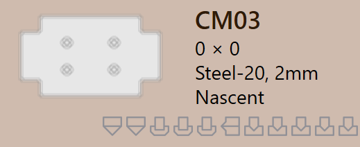

Delstatus
När en del importeras till TruSmartCAM bearbetas relevant plåtteknik automatiskt till delen. Som en del av denna process utför TruSmartCAM
Deltillståndet visas direkt på delbrickan, under delnamnet, och indikerar delets aktuella valideringstillstånd.
Deltillståndstyper beskriver de olika tillstånd en del kan befinna sig i som resultat av valideringskontroller på delnivå. Dessa tillstånd indikerar problem relaterade till delens design, material eller geometri och måste lösas innan verktygning kan fortsätta.
Delfel
Ett CAD-fel (Computer-Aided Design) uppstår när det finns ett problem i delens design eller geometri, såsom öppna konturer, saknad geometri eller otilldelat material. Dessa fel härstammar från CAD-modellen och förhindrar att delen bearbetas vidare.
-
Bockning ogenomförbar : TruSmartCAM försöker automatiskt hitta en giltig böjmetod för delen. Om den inte kan hitta någon lämplig böjlösning markeras delen som böj omöjlig.
-
Cut infeasible : Om böjvarningar ignoreras försöker TruSmartCAM sedan hitta en skärmetod. Om ingen giltig skärlösning hittas markeras delen som skär omöjlig.


Materialfel
-
Material finns inte : Delens tjocklek läses från CAD-modellen och matchas med material i TruSmartCAM-råmaterialdatabasen. Om inget matchande material hittas markeras delen med ett Material finns inte-fel.
-
Material inte kopplat : Om CAD-modellen inte har ett materialmappningsfält eller om fältet är tomt kan TruSmartCAM inte tilldela ett material. I detta fall markeras delen med ett Material inte kopplat-fel.


Geometrifel
-
Öppna konturer identifierade : CAD-filen har en eller flera öppna (ofullständiga) former, vilket förhindrar korrekt verktygning.
-
Flera ytterkonturer identifierade : CAD-filen har mer än en yttre sluten loop, vilket skapar förvirring under bearbetning.
-
Nascent error : När en del laddas från ett kalkylblad (CSV eller XLSX), men den faktiska CAD-filen saknas, markeras den som en nascent-del.
-
Geometri saknas : CAD-modellen har ingen giltig geometri eller geometrin är oläsbar, vilket gör den oanvändbar för verktygning.


